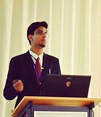

About
I'm currently a Staff Engineer in R&D at Synopsys. My doctoral work at IIT Kanpur (PMRF) developed coupled DSMC–DEM and CFD–DEM solvers to study plume–surface interactions and lunar landing physics.
My research interests span dusty gas flows, particle-fluid coupling, high-performance computing, and rarefied gas dynamics. I have published in Physical Review Fluids and Physics of Fluids, and presented at international conferences including RGD, TGF, and APS meetings.
Research Interests
- Dusty gas / gas–granular flows
- Plume–surface interaction and lunar landing physics
- CFD–DEM and DSMC–DEM solver development
- High‑performance computing & parallel solvers
- Shock–particle interactions, rarefied gas dynamics
Selected Publications
- Plume‑surface interaction during lunar landing using a two‑way coupled DSMC‑DEM approach — Phys. Rev. Fluids (2024)
- Supersonic dusty gas flow past a cylinder in Eulerian–Lagrangian framework — Physics of Fluids (2023)
- Parameter Estimation of Equipment for Development of an Experimental Setup of a Reverse Brayton Cryocooler — Indian Journal of Cryogenics (2019)
- Multiple peer‑reviewed conference papers and presentations at RGD, TGF, and APS meetings
Teaching & Mentoring
I have taught and tutored courses in thermodynamics, computational fluid dynamics, and programming. As a PMRF fellow, I served as:
- Live tutor for NPTEL: Introduction to Programming in C (2022)
- Live tutor for NPTEL: Computational Fluid Dynamics and Heat Transfer (2022)
- Teaching Assistant for multiple undergraduate and graduate courses at IIT Kanpur
I have also supervised internship students on simulation projects and delivered seminars on advanced topics in thermodynamics and CFD.
Contact
Email: aasheeshbajpai@gmail.com
GitHub: github.com/aasheeshbajpai
LinkedIn: linkedin.com/in/aasheeshbajpai
Affiliation: Synopsys (current); Department of Aerospace Engineering, IIT Kanpur (former)